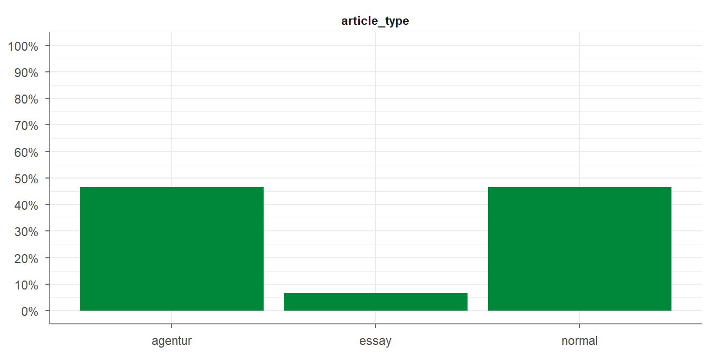
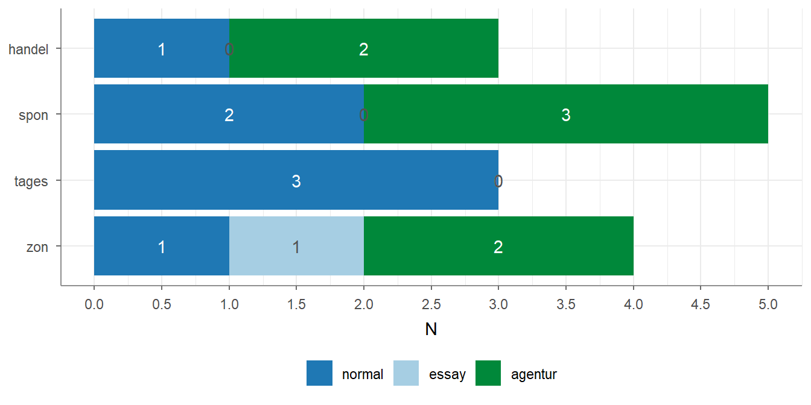
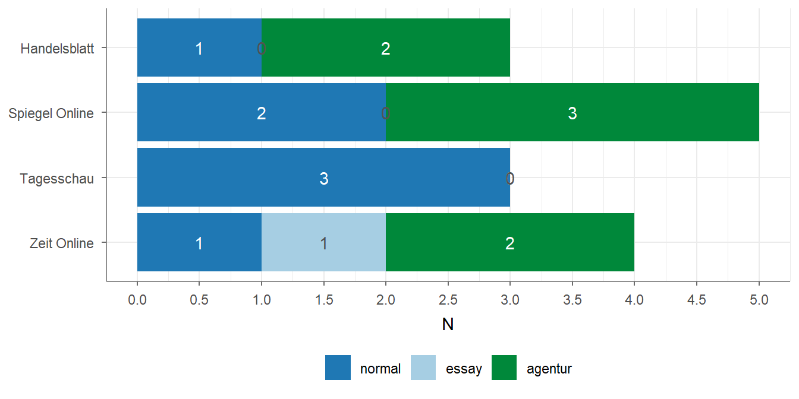
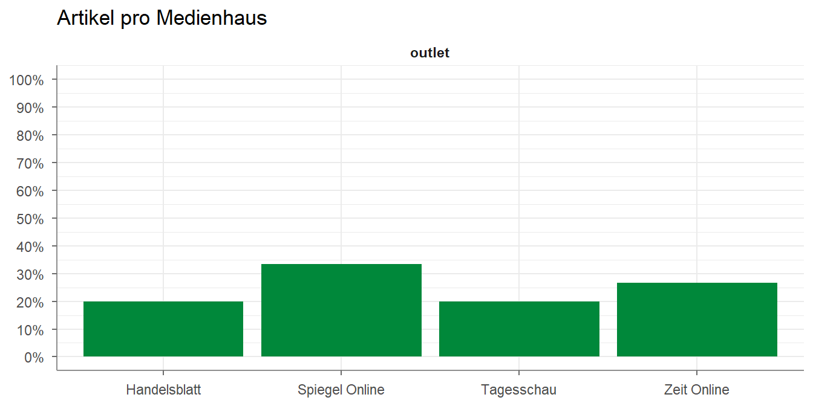
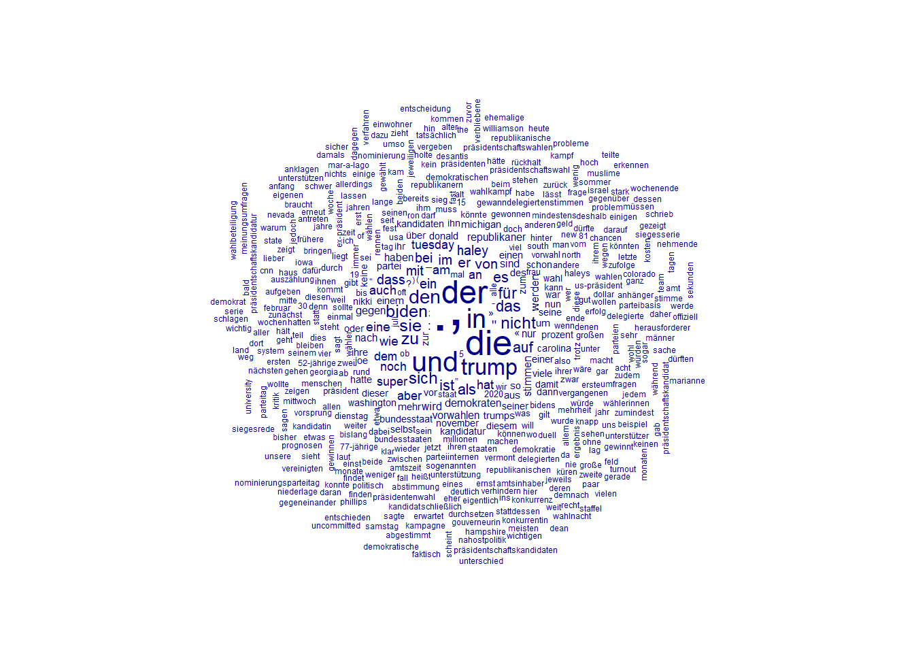
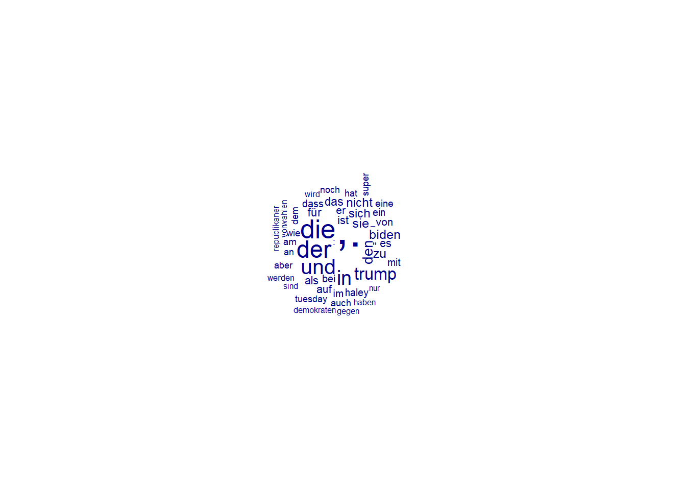
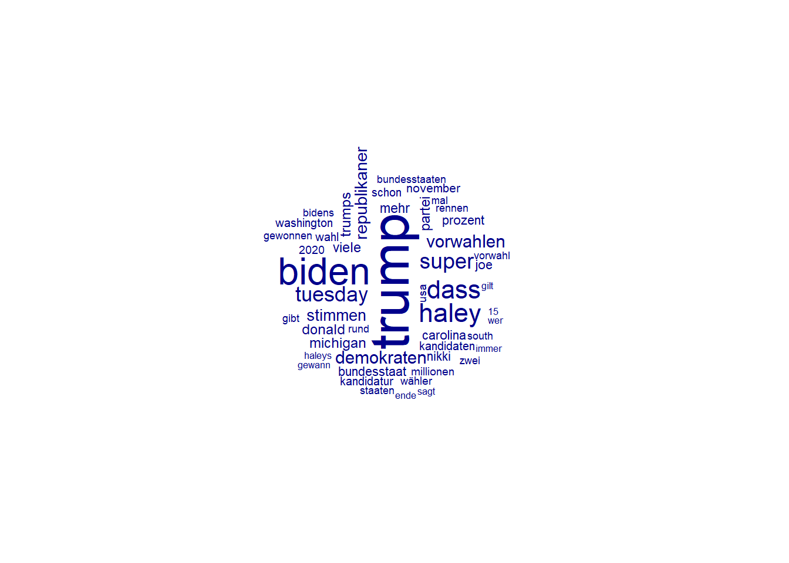

25. November 2026
Neben schlichten Kennzahlen bieten sich für bestimmte Daten aber auch grafische Darstellungen an. Wir lernen hier nur die absoluten Basics. R ist sehr vielseitig und mächtig und lässt auch abenteuerlichste und massgeschneiderte Darstellungen zu. Schauen Sie zum Beispiel hier für einige wunderschöne Beispiele. In vielen Fällen erfordert das allerdings fortgeschrittene Kenntnisse und geht damit über die Kurztutorials dieses Kurses hinaus.
Wir bleiben hier bei den Basics, die bereits recht hilfreich sein können, und verwenden dafür den Befehl visualize() aus tidycomm. Er funktioniert ganz einfach: Sie hängen ihn per Pipe an eine Auswertung an, und tidycomm wählt automatisch eine passende Darstellung. Wie im vorherigen Kapitel laufen die Blöcke nicht im Browser, bitte probieren Sie sie in RStudio aus.
library(tidycomm)Häufigkeiten und Verteilungen darstellen
Aus der Häufigkeitstabelle der Artikeltypen wird so ein Balkendiagramm:
tab_frequencies(data_kurz, article_type) %>% visualize()
Und aus describe() wird ein sogenannter Boxplot, der die Verteilung einer metrischen Variable zeigt:
describe(data_kurz, pics) %>% visualize()
Die senkrechte Linie markiert den Median, die waagrechte Linie reicht vom Minimum bis zum Maximum. Die “Box” (der Bereich zwischen dem 1. und 3. Quartil, in dem die mittleren 50 % der Werte liegen) ist hier zu einem Strich zusammengefallen. Das liegt daran, dass die meisten Artikel genau ein Bild enthalten.
Nicht jede Darstellung ist sinnvoll. Häufig ist eine der zentralen Aufgaben der visuellen Darstellung, sich zu überlegen, ob die Daten schon im richtigen Format für eine sinnvolle Darstellung sind. Das kann mühsam sein, insbesondere da R in solchen Fällen keinen Fehler ausgibt. Was halten Sie z.B. von dieser Grafik?
tab_frequencies(data_kurz, headline) %>% visualize()
Formal ist der Befehl nicht falsch (z.B. seitens der Syntax), inhaltlich ist die Darstellung aber nicht sinnvoll bzw. hat schlicht keinen Mehrwert: Jede Überschrift kommt genau einmal vor, und die Beschriftungen sind nicht lesbar.
Gruppen vergleichen
Auch Kreuztabellen lassen sich direkt darstellen. So sehen wir auf einen Blick, welche Artikeltypen in welchem Medienhaus vorkommen:
crosstab(data_kurz, outlet, article_type) %>% visualize()
Für eine bessere Verständlichkeit können auch die Namen der Medienhäuser noch ausgeschrieben werden. Dann werden sie in der Darstellung auch entsprechend angezeigt. Dafür verwenden wir mutate() zusammen mit case_when(), das für jede Zeile prüft, welche Bedingung zutrifft, und den Wert hinter der Tilde (~) einsetzt. Damit der Datensatz data_kurz unverändert bleibt, speichern wir das Ergebnis unter einem neuen Namen:
data_grafik <- mutate(data_kurz, outlet = case_when(
outlet == "handel" ~ "Handelsblatt",
outlet == "spon" ~ "Spiegel Online",
outlet == "tages" ~ "Tagesschau",
outlet == "zon" ~ "Zeit Online"
))
crosstab(data_grafik, outlet, article_type) %>% visualize()
Übung (in RStudio): Erstellen Sie dieselbe Grafik, aber mit Prozentangaben statt absoluten Zahlen, sodass sich die Medienhäuser trotz unterschiedlich vieler Artikel besser vergleichen lassen. Schauen Sie dafür mit ?crosstab in die Hilfe.
TippLösung
Das gesuchte Argument heisst percentages:
crosstab(data_grafik, outlet, article_type, percentages = TRUE) %>% visualize()
Jetzt sieht man z.B. sofort, dass die Tagesschau in unserem kleinen Beispiel nur normale Nachrichtenbeiträge enthält, während beim Handelsblatt und bei Spiegel Online die Agenturmeldungen überwiegen.
HinweisFür Fortgeschrittene: Grafiken mit ggplot2 anpassen
Im Hintergrund erzeugt visualize() Grafiken mit dem Paket ggplot2, das in der Wissenschaft heute der Standard für Grafiken in R ist. Deshalb können Sie die Grafiken mit ggplot2-Befehlen weiter anpassen, die mit einem + angehängt werden, z.B. einen Titel und eine Achsenbeschriftung mit labs():
library(ggplot2)
tab_frequencies(data_grafik, outlet) %>% visualize() +
labs(title = "Artikel pro Medienhaus", x = "Medienhaus")
Mit ggplot2 können Sie Grafiken auch komplett selbst bauen. Das ist am Anfang etwas aufwändiger, dafür haben Sie die volle Kontrolle über jedes Detail. Wer tiefer einsteigen möchte, findet hier viele Beispiele.
Darstellungsformen für Textdaten: Wortwolken
Die Masszahlen und Darstellungsformen soweit waren sehr allgemein und auf alle Arten von Daten anwendbar. Zuletzt wollen wir noch eine Darstellungsform kennenlernen, die spezifisch für Textdaten anwendbar ist: Wortwolken.
Wichtig
Die Pakete für diesen Abschnitt laufen nicht zuverlässig im Browser. Die folgenden Codeblöcke sind deshalb nicht interaktiv. Bitte führen Sie sie in RStudio aus.
Hierfür ist es hilfreich, zwei Pakete zu installieren, die spezifisch für die Arbeit mit Textdaten geschaffen wurden:
install.packages(c("quanteda", "quanteda.textplots"))library(quanteda)
library(quanteda.textplots)Die Autoren dieser Pakete haben uns viel Arbeit erspart und machen es uns einfach: Um nun eine Wortwolke zu erzeugen, sind nur drei einfache Schritte notwendig. Da wir dafür die Texte brauchen, arbeiten wir hier mit dem vollständigen Datensatz data. Die Bedeutung der Schritte habe ich in den Kommentaren im Code erläutert:
text_tokens <- tokens(data$text) # die Texte der Artikel werden in einzelne Wörter aufgetrennt
text_matrix <- dfm(text_tokens) # die aufgetrennten Wörter werden nun in einer speziellen Matrixform gespeichert (Document-Feature-Matrix, DFM)
textplot_wordcloud(text_matrix) # aus dieser DFM wird eine Wortwolke kreiert
Das ist schon ganz cool, aber auch ein wenig unübersichtlich. Wir wollen die Wolke nun auf die 50 häufigsten Wörter (hier: Tokens) limitieren. Das ist durch quanteda einfach möglich, da es im Befehl für die Wordcloud ein Argument gibt, die Grösse zu beschränken (siehe ?textplot_wordcloud):
textplot_wordcloud(text_matrix, max_words = 50)
Nun ist diese Darstellung zwar übersichtlich, aber noch nicht sehr hilfreich, da wir lauter inhaltslose Füllwörter wie “der”, “die”, “und”, etc. haben. Solche inhaltslosen Füllwörter werden als “Stopwords” bezeichnet. Für verschiedene Sprachen sind in dem Paket quanteda bereits Listen hinterlegt, die festlegen, welche Wörter als solche Stopwords zählen (wir können solche Listen auch selbst definieren). Diese existierende Liste können wir uns auch anzeigen lassen:
stopwords("german") [1] "aber" "alle" "allem" "allen" "aller" "alles"
[7] "als" "also" "am" "an" "ander" "andere"
[13] "anderem" "anderen" "anderer" "anderes" "anderm" "andern"
[19] "anderr" "anders" "auch" "auf" "aus" "bei"
[25] "bin" "bis" "bist" "da" "damit" "dann"
[31] "der" "den" "des" "dem" "die" "das"
[37] "daß" "derselbe" "derselben" "denselben" "desselben" "demselben"
[43] "dieselbe" "dieselben" "dasselbe" "dazu" "dein" "deine"
[49] "deinem" "deinen" "deiner" "deines" "denn" "derer"
[55] "dessen" "dich" "dir" "du" "dies" "diese"
[61] "diesem" "diesen" "dieser" "dieses" "doch" "dort"
[67] "durch" "ein" "eine" "einem" "einen" "einer"
[73] "eines" "einig" "einige" "einigem" "einigen" "einiger"
[79] "einiges" "einmal" "er" "ihn" "ihm" "es"
[85] "etwas" "euer" "eure" "eurem" "euren" "eurer"
[91] "eures" "für" "gegen" "gewesen" "hab" "habe"
[97] "haben" "hat" "hatte" "hatten" "hier" "hin"
[103] "hinter" "ich" "mich" "mir" "ihr" "ihre"
[109] "ihrem" "ihren" "ihrer" "ihres" "euch" "im"
[115] "in" "indem" "ins" "ist" "jede" "jedem"
[121] "jeden" "jeder" "jedes" "jene" "jenem" "jenen"
[127] "jener" "jenes" "jetzt" "kann" "kein" "keine"
[133] "keinem" "keinen" "keiner" "keines" "können" "könnte"
[139] "machen" "man" "manche" "manchem" "manchen" "mancher"
[145] "manches" "mein" "meine" "meinem" "meinen" "meiner"
[151] "meines" "mit" "muss" "musste" "nach" "nicht"
[157] "nichts" "noch" "nun" "nur" "ob" "oder"
[163] "ohne" "sehr" "sein" "seine" "seinem" "seinen"
[169] "seiner" "seines" "selbst" "sich" "sie" "ihnen"
[175] "sind" "so" "solche" "solchem" "solchen" "solcher"
[181] "solches" "soll" "sollte" "sondern" "sonst" "über"
[187] "um" "und" "uns" "unse" "unsem" "unsen"
[193] "unser" "unses" "unter" "viel" "vom" "von"
[199] "vor" "während" "war" "waren" "warst" "was"
[205] "weg" "weil" "weiter" "welche" "welchem" "welchen"
[211] "welcher" "welches" "wenn" "werde" "werden" "wie"
[217] "wieder" "will" "wir" "wird" "wirst" "wo"
[223] "wollen" "wollte" "würde" "würden" "zu" "zum"
[229] "zur" "zwar" "zwischen" Diese Wörter wollen wir nun aus unseren Texten entfernen. Das geht wie folgt. Wir fangen dabei wieder bei unseren Ausgangsdaten an und der Code ist fast identisch zu davor, mit einem kleinen Zusatz. Schauen Sie gerne, ob Sie ihn entdecken und erraten können, was dort passiert, und auch, was ich sonst noch geändert habe und warum:
text_tokens <- tokens(data$text, remove_punct = TRUE)
text_tokens <- tokens_remove(text_tokens, pattern = stopwords("german"))
text_matrix <- dfm(text_tokens)
textplot_wordcloud(text_matrix, max_words = 50)
Spannend wäre auch, als nächstes zu schauen, ob sich die häufigsten Wörter in den Texten je nach Medienhaus unterscheiden. Haben Sie eine Idee, wie man das mit den Methoden, die wir bisher kennengelernt haben, grafisch analysieren könnte?
Ich kann Ihnen sehr empfehlen, sich mal die Beispielseite von quanteda anzuschauen. Abseits der Wortwolke sind hier noch weitere wirklich hilfreiche Darstellungsformen gut verständlich aufbereitet. Insbesondere die Frequency Plots, siehe hier, könnten für die ein oder andere Auswertung möglicherweise interessant sein (dort wird dann auch auf das oben bereits erwähnte Paket für grafische Darstellungen ggplot2 zurückgegriffen).
Nice to know:
Die Art und Weise, wie in der Textverarbeitung Texte oft gespeichert werden - auch bei uns oben - ist ziemlich raffiniert. Schauen Sie sich dazu die Document-Feature-Matrix einmal an. Fällt Ihnen etwas auf?
text_matrixdfm of 15 documents x 2,638 features (6,264 occurrences, 88.24% sparsity).
features
docs frühere us-präsident donald trump vorwahl präsidentschaftskandidatur
text1 1 1 1 5 2 1
text2 0 1 1 10 2 0
text3 0 0 3 13 3 1
text4 1 0 2 10 0 0
text5 0 0 2 29 0 0
text6 0 1 1 7 0 0
features
docs republikaner bundesstaat south carolina
text1 4 4 6 6
text2 5 2 2 2
text3 4 2 0 1
text4 2 3 1 1
text5 2 1 0 1
text6 3 2 0 0
[ reached max_ndoc ... 9 more documents, reached max_nfeat ... 2,628 more
features ]Tipp: Es ist gängige Praxis, alle Pakete, die im Verlauf eines Scriptes benötigt werden, ganz oben im Script aufzurufen. Das heisst, anstatt dass Sie die bisherigen Pakete (readxl, dplyr, stringr, tidycomm, quanteda, etc.) jeweils an den Stellen installieren und aktivieren, an denen der relevante Code folgt, können Sie alle Pakete oben zu Anfang Ihres Scripts aufrufen. Sollte ein weiteres Paket im Verlauf nötig sein, können Sie es oben einfügen und ausführen. In der Zukunft haben Sie dann direkt zu Anfang einen Überblick über die benötigten Pakete und sie stören den Ablauf im weiteren Script nicht mehr.